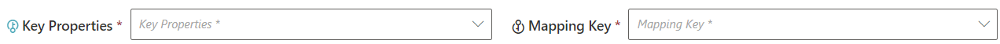
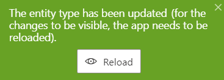

Select Primary Keys
How to choose its keys and an Entity Type Mapping key in order to uniquely identify the Entity Type 's resources at different points in a resource's lifecycle.
Overview
Here you will learn how to select keys from among the entity type's scalar properties, in order to ensure the unique identification of resources at different times.
It is important to show caution when choosing the mapping key and key properties for a set of data. Every extracted resource must have unique keys in order to be uniquely identified in all IGA actions performed by Identity Manager.
Key properties
The key property of an entity type is a property chosen from among scalar properties. A key property is used only in the XML configuration, but required when working both from the UI or from the XML configuration.
The purpose of key properties is to uniquely identify a resource from the entity type in the XML configuration. In particular, some rules need to fetch a resource, by querying the key property's column in Identity Manager's database.
For example a navigation rule involving an AD group can be written:
<NavigationRule Property="memberOf" Resource="CN=SG_APP_AG002,OU=Applications,DC=acme,DC=internal" SingleRole="AG002" />Identity Manager needs to know what column to query to find the right resource via
CN=SG_APP_AG002.... In this example we must choosednas a key property because it is thednproperty we use to represent the AD resource.
Key properties must be unique and immutable. They do not have to be immutable but they must enable resources to be uniquely identifiable at t time.
The
dnattribute of a resource in the Active Directory usually depends on the resource's position, which often changes during the resource's lifecycle. However,dnis unique at a given time, and rather useful to define for example query rules forparentdn.
Only one key property is required, but using several key properties can sometimes help with the rules in the XML configuration. Identity Manager will search the columns of each key property, one by one, until a corresponding resource is found.
For example, the AD's unique identifier is
objectGuid. However, integrators may prefer to usednbecause it constitutes a clearer group identification from a user's point of view. Plus,objectGuidis environment-specific so using it can complexify a situation where we want to move the configuration from an environment to another.Since an
objectGuidcan still be an interesting identifier, we want to have both thednand theobjectGuidas key properties. In this case, Identity Manager will be able to fetch a resource in a rule using said resource'sdnorobjectGuid.
Mapping key
The mapping key is also chosen from among scalar properties, and serves to uniquely identify any resource during the Synchronize Data . It must be unique and immutable, i.e. must not change during the whole lifecycle of the resource.
A mapping key cannot be based on properties subject to change, such as the display name of any object, or users' title which could be renamed.
For example, resources from the AD are usually identified through the
objectGuidattribute which is therefore specified as mapping key.
Commonly used mapping keys are:
objectGuidfor the Active Directoryobjectidfor Microsoft Entra IDentryUuidfor LDAPIdentifierfor the directoryLoginfor SABsapidfor SAPsys_idfor ServiceNowEmployeeIdfor the HR
Since the mapping is able to uniquely identify any resource, NETWRIX recommends that your mapping key is always part of your key properties.
Select the Entity Type's Keys
Create an entity type by proceeding as follows:
-
Start by defining the entity type's scalar properties. See the Define Scalar Properties topic for additional information.

-
In the entity type's Properties section, choose the key properties.
-
Choose the mapping key.
-
Click on Create & Close > Create to save your changes.
Reload
Every time an entity type mapping is modified and saved, a green pop-up appears saying that you should reload the schema to implement the changes. You do not need to click on the button every time. It is essential though to reload after the final changes are made.

The Reload button mostly enables your changes to appear in the menu items, which configure the left menu links on the UI's home page.
You can find the Reload button either on the green warning, or on the connector's dashboard.
Next Steps
After the entity type is created with its scalar properties and keys, you can Define Navigation Properties and/or Set Resources' Display Names .